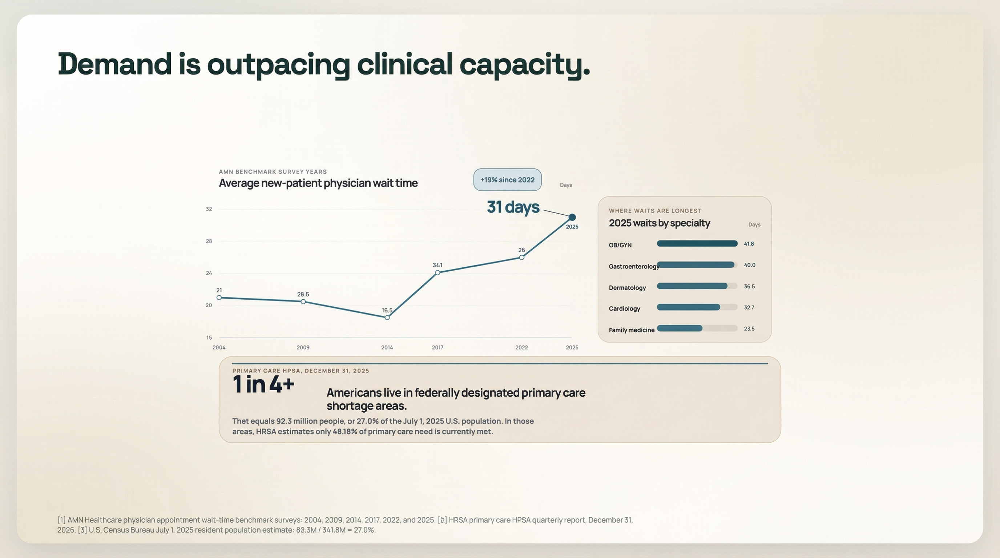
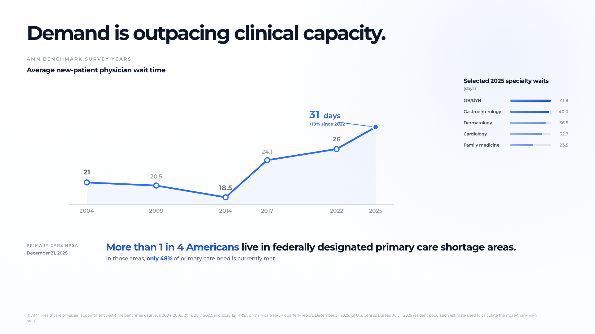

{kind=link}
{kind=link}
{kind=link}
{kind=link}
Executive Summary
_No assessment synthesis found._
_No assessment synthesis found._
_No next-pass plan found._
- stay in the current family - this is now a polish pass, not a concept reset
No Gemini review summary found.
The slide carries strong data and a clear thesis, but the layout fractures attention across three competing zones (trend line, specialty breakout, HPSA banner) without a clear reading order. A viewer reads the title, then stalls deciding where to look next. The urgency the data deserves is partially lost to visual fragmentation and underweight hierarchy.
No Codex repair summary found.
No Gemini repair summary found.
No Anthropic repair summary found.
_No repair synthesis found._
Set the tone. This slide is not here to explain the company. It is here to establish seriousness before evidence appears.
**Vox is a serious clinical workflow product, not a gimmick, not a chatbot, and not a thin consumer-health layer.**
**This looks like a thoughtful, clinically serious company. I am willing to hear the problem they think matters.**
This is a trust precondition slide. Before the audience evaluates the argument, they are evaluating judgment, seriousness, category discipline, and taste.
**Header** VOX
**Subheader** Pre-visit clinical intelligence for efficient, high-quality care.
Not really a figure. This is a restrained brand lockup / tone-setting surface.
This slide is basically in the right place. The main risk is adding too much to it.
**Near locked.**
---
Establish that the problem is real, structural, worsening, and already visible to patients.
**There are not enough clinical slots relative to demand, and the strain is already showing up in access.**
**There is a real capacity/access problem here, and it is severe enough that improving throughput would matter.**
This is the first true argument slide. It chooses the kind of problem the company is solving.
It is not saying:
It is saying:
**Header** Demand is outpacing clinical capacity.
No subheader is required unless the final visual wants a tiny support line.
The strongest preferred direction remains:
**One month to the next available appointment**
Meaning:
Because it makes capacity constraint feel like the **absence of openings**, which is exactly what the rest of the deck will later try to address.
It is more visceral than a normal chart. It is more memorable than two stat tiles. It still feels premium if done carefully.
If needed, use:
But that is more conventional and less memorable.
Conceptually strong. This slide is not the current weak point. The main work is execution quality and ensuring the visual feels elegant rather than gimmicky.
**Conceptually locked; execution still matters.**
---
Move from the macro problem to the operating lever.
**In a capacity-constrained system, small repeatable gains inside the visit can compound into real clinical capacity.**
**There is a credible throughput lever here, and it is worth asking where the cleanest minutes can be reclaimed.**
This is the bridge slide. It earns permission to care about narrow per-visit efficiency without feeling trivial.
**Header** More efficient visits will increase supply.
A small support treatment is acceptable if needed, but the slide should remain sparse.
A clean conceptual cumulative visit-efficiency figure.
The right read is:
This slide should not yet identify history. It should not yet explain story-to-structure. It should not yet do financial math.
It just has to make the throughput logic feel credible.
This slide is in decent shape. The main guardrail is not to overclaim and not to use fake time anatomy.
**Near locked.**
---
Current working methodology for building Designer slide figures inside this repo.
This is the project-local source of truth for how we actually run the process. The imported manual at inputs/pitch_deck_figure_workflow_manual.md remains the upstream reference, but this file reflects the hardened process after real deck passes in this repo.
Use a repeatable loop that keeps strategy, figure decisions, model comparison, and review artifacts organized under one project root.
The goal is not just to make a figure. The goal is to preserve:
Current execution policy:
challenge branches
Gemini image + Gemini HTML
HTML/SVG/PNG artifact set
All active deck work should live under projects/designer-health/.
The key folders are:
deck-spec.jsonmaster-slide-specs.mdfigure-companion.mdslide-packets/figures/briefs/figures/ideation/figures/compositions/figures/render-briefs/figures/specs/prompts/slide-figures/Generated runtime artifacts may still land in output/, but stamped slide-review artifacts should resolve through the manifest-backed slide-figures/slide-XX/ tree.
Each stamped slide directory is manifest-backed. The root stays intentionally clean and keeps only the current selected figure projection plus version history:
manifest.jsonversions/slide-XX--version-YYYYYY.htmlslide-XX--version-YYYYYY.svgslide-XX--version-YYYYYY.pngslide-XX--version-YYYYYY.jpg or .webpThe current selected version is projected into the slide root for compatibility and fast browsing. Historical and draft candidates live under versions/version-*--<slug>/. Slide-level notes and change requests live under slide-notes/<slide-dir>/, and one-slide HTML reports live under slide-reports/<slide-dir>.html.
Use canonical stamped review directories inside the current selected version bundle:
gemini-review/anthropic-review/gemini-repair/anthropic-repair/When re-running a review or repair consult for the same current pass, overwrite the canonical directory instead of inventing a new suffixed folder name.
Every fully worked slide should have:
After a slide is stamped, later chats may enter a slide-local fine-tuning mode instead of replaying the full concept workflow.
Use this mode only when the requested change is polish-level and the current selected direction is still valid.
The handoff contract for that mode lives in:
projects/designer-health/slide-fine-tuning.mdIn fine-tuning mode:
version
slide-reports/<slide-dir>.html, and the stamped slide note in slide-notes/<slide-dir>/README.md
deck-spec.jsonmanifest.json inside paths.stampedDir to find the current selecteddeck-report.html, the stamped slide report ina contained HTML delta
versions/version-*--<slug>/gemini-html/generated.html branch forfigures/specs/*.json when the slide is spec-drivendraft is promoted
figure.* assets if theDo not reopen ideation, packet writing, or direction selection unless the requested change exposes a structural problem.
When a slide needs a new first draft from the locked Designer shell rather than polish on an existing HTML surface, use the create bootstrap instead of html:edit:run or gemini:html:tune.
In create mode:
templates/designer-deck-template-v1/template.html
under versions/version-*/create/
against the seeded shell
it with slide:versions promote
deck-spec.jsoncreate-draft version bundle under versions/slide-notes/<slide>/create-request.md plus a version-local snapshotslide:create:run to fan out the first-pass multimodal HTML searchdraft state until a human explicitly promotesLane policy in v1:
html: default first-draft pathhybrid: same HTML bootstrap plus extra reference images/filesnative: scaffold-only handoff to the existing native/spec workflowPull the current slide, the lead-in slide, and the next slide from deck-spec.json and sanity-check the human copy in master-slide-specs.md.
Lock the slide thesis, non-goals, figure job, and figure-specific copy.
Keep this short and execution-facing.
Start with figures:ideate against the checked-in brief. For essential slides or when the wrapper is brittle, also gather direct concept sets from GPT-5.4, Claude, and Gemini.
Do not leave the raw model artifact as the only record. The ideation note should make the distinct concept families obvious and name the current lead direction.
Compare materially different visual families and choose one.
Lock the chosen direction before native rendering.
Use it as the main taste / composition iteration lane.
Use it as the main editable / structural iteration lane.
Run html:screenshot on gemini-html/generated.html.
before broader review or repair. Use it for moves like spacing, position, visibility, size, or one contained structural tweak. Every micro-pass now has two checks:
gemini:html:tuneDo not use it for family changes, semantic rewrites, or broader layout redesigns. The micro-pass draft should live in slide-figures/slide-XX/versions/version-*--<slug>/.
OpenAI or Anthropic generation branches are no longer default per-slide requirements. Use them only for high-level ideas, challenge passes, or blocked Gemini cases.
Ask for:
Save those under the current selected version bundle.
Summarize:
Decide whether the current winner has only polish issues or still has a structural problem. If the issue is structural, reopen the loop and do a deliberate revision pass before promotion.
Ask Codex, Gemini, and Anthropic what to do next now that the failure class is known.
Classify the failure and state the exact next move before touching the next revision.
Native remains the canonical editable asset set: figure.html, figure.svg, and figure.png. Those artifacts stay inside the selected version bundle and are projected to the slide root as slide-XX--version-YYYYYY.html, .svg, and .png when the version is promoted.
If the pass changed the slide thesis, header, subheader, takeaway, figure role, family recommendation, numbering status, or current build status, update deck-spec.json, master-slide-specs.md, deck-matrix.md, and figure-companion.md in the same turn.
Write a clean HTML report into slide-reports/slide-XX.html so the whole pass is reviewable in one click.
direction is locked
delta before the pass goes back through broader review
break
until the regression gate runs again
Gemini lane is stable
defaults
Codex, Gemini, and Anthropic
understanding
gemini:html:tune is now the default micro-loop for one concrete Gemini HTMLgenerated.html invalidates prior micro-pass approvalAsk this after the first comparison pass:
now stale?
If the answer is yes to any of those, loop again.
If the answer is no and the remaining issues are polish only, promote.
For figure-essential slides, prefer at least one critique and one deliberate revision unless the first pass is already clearly stable.
Also run this visual sanity check before promotion:
visibly justified
ambiguous
xml
composition rather than a cropped fragment
Also ask:
noise?
first, or has it crossed into a broader layout / family / semantic problem?
gemini:html:tuneIf a branch is not meaningfully helping, archive it out of the primary comparison set.
Use this exact order:
Write a blunt local assessment based on the actual rendered image.
Use gemini:review with the stamped image and the checked-in critique prompt.
Use anthropic review with the same stamped image and prompt.
Write one checked-in synthesis note that captures:
The operator decision is not a vote count. It is a synthesis. But the point of the three-review set is to make weak self-approval much harder.
Unique blocker findings must be preserved even when only one reviewer catches them. Do not omit a concrete severe finding just because the other reviewers missed it.
When the slide does not clear the loop gate, classify the failure before revising:
Small spacing, sizing, or emphasis issues. Same concept, same family.
The right ingredients exist, but their arrangement or hierarchy is wrong.
The slide is readable but the figure is proving the wrong thing or duplicating meaning badly.
The chosen visual family is wrong for the slide job.
polishlayoutsemanticfamilyThen run a separate repair consultation.
This is not the same thing as the review prompt.
The review prompt asks:
The repair prompt asks:
Then choose the next move:
run gemini:html:tune first and only reopen the broader loop if that fails
do one targeted revision pass
write 2 to 3 concrete revision options in the composition note and choose one
update the slide packet before rendering again
stop iterating inside the same family and reopen composition
Do not jump straight from “broken” to “new render” without writing the next move down.
Do not synthesize the repair round loosely. Compare the three repair responses across the same four axes:
stay in the current family or reopen composition
targeted revision or broader redesign
Then apply this rule:
take the shared path and write it into next-pass.md
of the same move: take the majority path and note the dissent in repair-synthesis.md
do not render yet; reopen composition
update the slide packet before choosing a figure move
The operator decision is still a synthesis, not a vote count. But the synthesis must be traceable to those four axes.
projects/designer-health/figures/briefs/<brief>.md
projects/designer-health/figures/specs/<spec>.json
projects/designer-health/figures/specs/<spec>.json --project-root projects/designer-health --slide slide-XX --version-id version-000123 --no-images
projects/designer-health/prompts/<prompt>.txt --out projects/designer-health/slide-figures/slide-XX/versions/version-*--<slug>/gemini-image
projects/designer-health/prompts/<prompt>.txt --out projects/designer-health/slide-figures/slide-XX/versions/version-*--<slug>/gemini-html
projects/designer-health/slide-figures/slide-XX/versions/version-*--<slug>/gemini-html/generated.html --output projects/designer-health/slide-figures/slide-XX/versions/version-*--<slug>/gemini-html/preview.png
projects/designer-health/slide-figures/slide-XX/versions/version-*--<slug>/gemini-html --change-file projects/designer-health/slide-notes/slide-XX/fine-tune-request.md --codex-review-file projects/designer-health/slide-figures/slide-XX/versions/version-*--<slug>/gemini-html/tune/<run-id>/<attempt>/codex-micro-review.md
--slide slide-XX
requires the checked-in codex-repair.md as the Codex / GPT-5.4 input and writes repair-synthesis.generated.md as a scaffold
npm run figures:ideate -- --briefnpm run figures:render -- --specnpm run figures:export -- --specnpm run slide:versions -- createnpm run slide:versions -- promotenpm run slide:versions -- migratenpm run gemini:image -- --prompt-filenpm run gemini:html -- --prompt-filenpm run html:screenshot -- --inputnpm run gemini:html:tune -- --dirnpm run figures:report -- --project-root projects/designer-health --slide slide-XXnpm run figures:repair-loop -- --project-root projects/designer-healthloop gate says the remaining issues are polish-level
considering the pass complete
and the relevant tooling docs before moving on
versions/version-* bundle is better than copying later
no outer frame, no browser-like margins, full-slide scale
defer it just to keep the first pass cleaner; that should trigger a reopened loop, not a promotion
spec retained as historical coverage
read
place
benchmark wait-time trend across AMN survey years, ending at 31 days in 2025
2025 specialty breakout showing several categories already at 5 to 6 weeks
full-width primary-care shortage banner built from HRSA designated shortage data, led by the more than 1 in 4 ratio instead of the raw population count
slide-figures/slide-02/gemini-html/generated.html
figures/specs/slide-02-wait-times-shortage-banner.json
AMN Healthcare 2025 Survey of Physician Appointment Wait Times and Medicare and Medicaid Acceptance Rates
HRSA primary care HPSA quarterly report as of December 31, 2025
U.S. Census Bureau July 1, 2025 resident population estimate
more than 1 in 4:static wait-time number
a dashboard
than a softer inconvenience narrative
fine-tune surface for contained slide-2 polish
HTML winner instead of reopening the older proof-tile family
slide-figures/slide-02/gemini-html/generated.html as the activeHeader:
Demand is outpacing clinical capacity.Scope:
Must-keep proof facts:
was available when needed
~1 month average wait for a new doctor appointmentUp 19% in three years10.6% of adults delayed or did not get medical care because no appointmentDesired effect:
numbers.
Helpful directions:
Avoid:
slug: slide-02-proof-tiles-pd-template-1slide: 2deck: pd-template-1status: ideatingbe a separate visual-composition layer before any new rendering happens
while keeping the slide premium and restrained.
direction before generating more variants.
available when needed
Demand is outpacing clinical capacity.~1 month average wait for a new doctor appointmentUp 19% in three years10.6% of adults delayed or did not get care because no appointment wasopening landing in week 4
Booked-Out Month ViewassetMode: nativeimageQueries: noneopening
Schedule ColumnsassetMode: nativeimageQueries: noneweek 4
Next Available SlotassetMode: nativeimageQueries: noneavailable
Search to Slot to Care PathassetMode: nativeimageQueries: noneavailable appointments
Demand Queue VisualizationassetMode: nativeimageQueries: nonein time
Appointment Card SequenceassetMode: nativeimageQueries: nonefull-width substrate
Reception Window PhotoassetMode: photoimageQueries:clinic front desk scheduling appointment healthcareclinic reception appointment book healthcarevisible
Appointment Book Photo CardassetMode: photoimageQueries:medical appointment calendar desk clinic scheduleclinic reception appointment book healthcaretreatment
access friction
Phone and Calendar DiptychassetMode: hybridimageQueries:smartphone medical app schedulingmedical appointment calendar desk clinic scheduleimage
Phone Scheduling ScreenassetMode: hybridimageQueries:smartphone medical app schedulingenough to use as substrates
matched pair after monochrome treatment
scheduling problem
Schedule ColumnsNext Available SlotReception Window PhotoPhone and Calendar DiptychBusy waiting room photo passstock image behaving well
current tone best
two stat tiles should attach to it without overlapping or repeating the same information
Schedule Columnsnativephoto or hybrid, proposed media.slots queries:proof_tilesslug: slide-02-proof-tiles-pd-template-1slide: 2deck: pd-template-1status: composingrender
attachment, and failure mode before any new spec is drafted
proof stats read as evidence rather than decoration.
cropped to occupy the upper half of the figure area
calendar object
outlined open date
software screenshot
explicit full labels in every cell
next available marker on the lone open date in week 4proof_tilesnative~1 month stat sits under the left half as the interpretation of the10.6% stat sits under the right half as the system consequencenext available tagnonemonth gridproof modulesnext available tagnext available must not collide with the month grid linesthe summary of the whole strip
cue if needed
states
strip
explanatory labels
proof_tilesnativemissed visitnoneschedule striplate openingproof modulesand the fourth contains the next opening
readout
available when needed
visible appointment time in week 4
tiles
object
proof_tilesnative~1 month stat anchors under the weekly sequence as its plain-language10.6% stat anchors beside it as the downstream effect when no slot isnoneweek cardsfull or open, oneproof modulesfull/open, one appointment timeand two outcomes
disconnected tiles
the middle of the path
late slot to no slot availableproof_tilesnativeneed caresearch / availabilityweek 4 appointment and care delayed~1 month attaches to the late-appointment branch10.6% attaches to the delayed-care branchnonecare pathendpoint metricsgate
proof_tilesnative~1 month sits beneath the backed-up queue10.6% sits beneath the dropped requestnonerequest queuecapacity gatedropped requestcard
proof_tilesnative~1 month sits beneath the delayed card progression10.6% sits beneath the unavailable card cuenoneappointment cardsconfirmed on the finalunavailable cardno slot available or a simple strike-through cuesubstrate
with usable negative space
geometry and least performative expressions
rather than faces
phone, or appointment artifact
proof_tilesphotosubstratephoto bandproof modulesplanner, appointment book, or desk calendar
no bright office clutter
lifestyle framing
proof_tilesphotoherophoto cardproof modulesshowing a scheduling surface
clearly conveys failed scheduling effort
disconnected tile pair
grayscale treatment
top-level explanatory caption
proof_tileshybridAccess proofDeferred care proof if itherocalendar framephone frameproof modulessearch state
space
marketing lighting
proof_tileshybridherophone objectproof modulesSchedule ColumnsNext Available SlotAppointment Card SequenceReception Window PhotoPhone and Calendar DiptychAppointment Book Photo CardPhone Scheduling Screenslug: slide-02-proof-tiles-pd-template-1slide: 2deck: pd-template-1status: ready-for-spectwo proof stats as the explicit evidence layer.
clearly open late slot
slightly above center
19% in three years`
appointment was available when needed`
appointment cue only if it adds meaning
the left proof module
card layout
name:Schedule Columnsnativerestrained variationopen appears once if neededAccess, ~1 month, Average wait for a new doctor appointment, `UpDeferred care, 10.6%, `Adults delayed or did not get care because nofully booked, high demand, or capacity crisis~1 month and 10.6%nonefull text in every slotproof_tiles motif rather than a genericslot appearing only in week 4
above midline
consequence
name:Next Available Slotnativerestrained variationWeek 1, Week 2, Week 3, Week 4full on weeks 1 to 3 if neededthis equals one month~1 month sits directly below the card group as the plain-language readout10.6% sits to the right beneath the final card as the downstream system~1 monthnoneartifacts.
confirmed and one nearby unavailable card as a secondary cue
a slight stagger or cascade
name:Appointment Card Sequencenativebold variationconfirmed state on the final cardno slot or unavailable cue on the secondary cardpushed back again language~1 month sits under the delayed progression10.6% sits beneath or near the unavailable card cuenonefunnel.
gate, with one dropped request as the deferred-care cue
the dropped-request side
object
name:Demand Queue Visualizationnativebold variationdemand or capacity gate~1 month belongs under the compressed queue10.6% belongs under the dropped-request sidenonereal without turning the slide into a photo spread.
handling
right; it is context, not a split comparison
proof modules
geometry and low facial emphasis
the metrics
treatment
name:Reception Window Photophotorestrained variationsubstratestrip media role with quiet grayscaleside
them
assembled
proof modules below
name:Phone and Calendar Diptychhybridbold variationAccess moduleDeferred care module~1 month belongs under the scheduling-surface panel10.6% belongs under the phone-side failed-search panelheroSchedule ColumnsNext Available SlotPhone and Calendar DiptychDemand Queue VisualizationSchedule Columns

